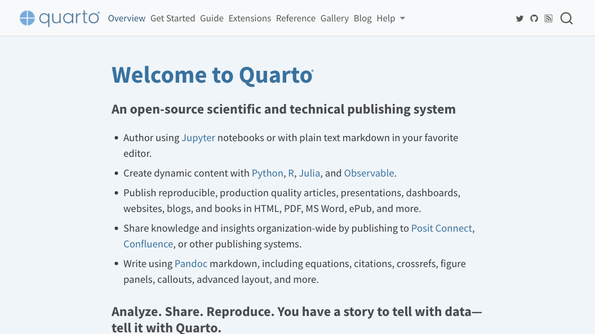

timeline
section Release
1.0 : July, 2022
1.1 : August, 2022
1.2 : November, 2022
1.3 : April, 2023 : Current
section Pre-Release
1.4 : Fall 2023

A Not So Gentle Introduction
Thursday, the 19th of October, 2023
What is Quarto?

What is Quarto?
Quarto (quarto.org):
- is a free and open-source software, released under the GPL by Posit, PBC.
- is a command line interface (CLI).
- mainly supports Python, R, Julia, and Observable JavaScript.
- supports writing document as Markdown or Jupyter Notebook.
- can build HTML, PDF, Microsoft Word, etc.
- can build websites, blogs, books, etc..
- is built on Pandoc.
What is Pandoc?
Pandoc (pandoc.org):
- is a free software, released under the GPL by John MacFarlane.
- is a command line interface (CLI).
- allows to convert to and between multiple formats.
- understands Markdown syntax.
- understands LaTeX math and macros.
- handles citations and bibliographies.
A Guide to Quarto Versions
Getting started
Downloading and installing Quarto
Downloading and installing Quarto
Additionally, you can download and install Quarto using:

Writing with your favourite editor
Quarto: a command line interface
Usage: quarto
Version: 99.9.9
Description:
Quarto CLI
Options:
-h, --help - Show this help.
-V, --version - Show the version number for this program.
Commands:
render [input] [args...] - Render files or projects to various document types.
preview [file] [args...] - Render and preview a document or website project.
serve [input] - Serve a Shiny interactive document.
create [type] [commands...] - Create a Quarto project or extension
create-project [dir] - Create a project for rendering multiple documents
convert <input> - Convert documents to alternate representations.
pandoc [args...] - Run the version of Pandoc embedded within Quarto.
typst [args...] - Run the version of Typst embedded within Quarto.
run [script] [args...] - Run a TypeScript, R, Python, or Lua script.
add <extension> - Add an extension to this folder or project
install [target...] - Installs an extension or global dependency.
publish [provider] [path] - Publish a document or project. Available providers include:
check [target] - Verify correct functioning of Quarto installation.
help [command] - Show this help or the help of a sub-command. Checking Quarto is installed
Creating a new Quarto project
Quarto projects: default
Quarto projects: default
_quarto.yml: project configuration file.
Default.qmd: default Quarto document.
Quarto projects: website
Quarto projects: blog
Quarto projects: book
Quarto projects: manuscript
Quarto features
Writing using the Visual Editor
Mermaid Diagrams
Markdown tables
Code annotations
- Source
Code annotations
- Output
library(tidyverse)
library(palmerpenguins)
penguins |>
mutate(
bill_ratio = bill_depth_mm / bill_length_mm,
bill_area = bill_depth_mm * bill_length_mm
)- 1
-
Take
penguins, and then, - 2
- add new columns for the bill ratio and bill area.
Cross-references: “figures”
This is a figure
Figure 1 is the reference to a figure. Or is it?
Cross-references: “tables”
This is a table
Table 1 is the reference to a table. Or is it?
Cross-references: “anything”
Define a new cross-reference type:
- 1
-
cross-referenceable elements with captions are
float. - 2
- used as the prefix for reference in output (e.g., “In Figure 1, …”).
- 3
- used as the prefix for captions (e.g., “Figure 1: …”).
- 4
- used as the prefix for the reference identifier (e.g., “In @fig-1, …”).
This is text
Text 1 (a) is the reference to a text.
Shortcodes
Extensions
Discover more extensions at:
Quarto resources


About